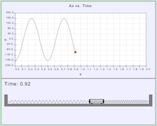

Problem 2.12: Two Springs Attached to the Ends of a Cart

A cart on a frictionless rail is attached to two springs. The
cart is released so that it moves back and forth solely in the x direction. The problem
investigates the acceleration of the cart undergoing this type of motion.